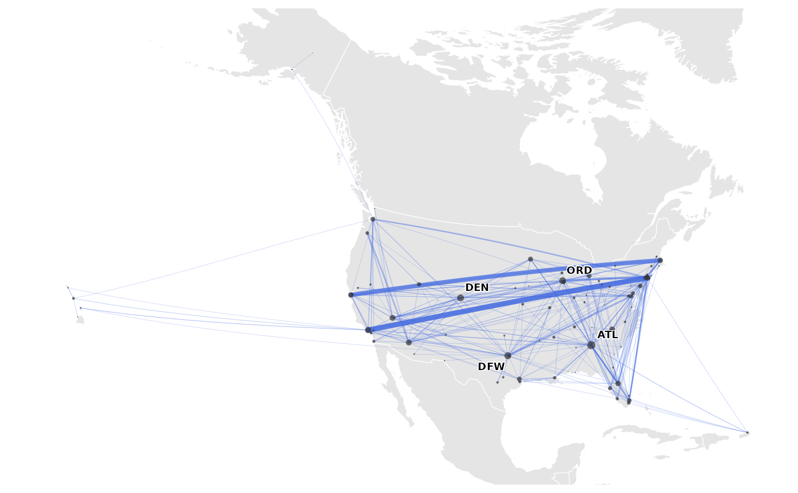

Creates OD maps from make.net functions. Routes are drawn as great
circles, with line width and opacity scaled by passengers, and airports
sized by traffic. By default a static ggplot2 map is returned; with
interactive = TRUE a zoomable leaflet map is returned instead.
Arguments
- x
Skynet Object (generated by make_net_dir,make_net_und or make_net_path)
- pct
percentage of edges to include (busiest routes first)
- interactive
returns a leaflet map instead of a ggplot2 map
- crs
projection used for the static map (any value accepted by
sf::st_crs). By default an Albers equal area projection is used for North American networks and Equal Earth for everything else. Requires the sf package; without it a simple lat/long map is drawn.- carriers
maximum number of carriers shown individually when the network is grouped by carrier. Remaining carriers are grouped as "Other".
Examples
network <- make_net_dir(OD_Sample)
net_map(network, pct = 10)

net_map(network, pct = 10, interactive = TRUE)